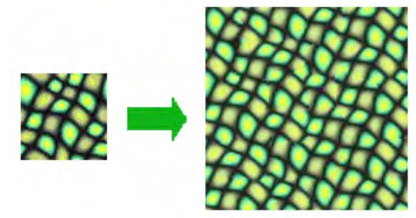
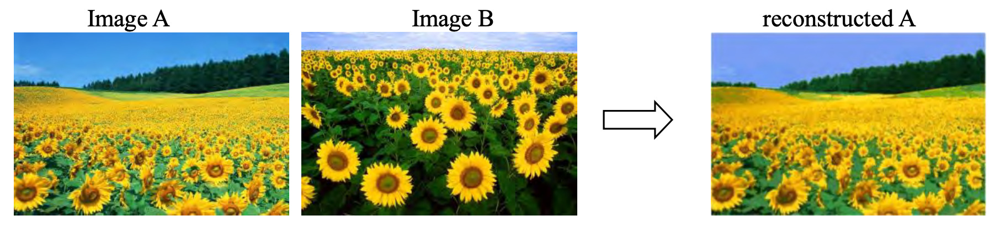

CA-2.1: Texture Synthesis
Deadline: March 30, 2022 at 5pm
Read carefully: Academic integrity must be stricly followed. Copying-and-pasting from other's
code or froms any sources is not allowed. Software will be used
to detect any form of source code plagiarism. You must write
your code in ipython notebook (or jupiter notebook), and indicate
the number of the questions/instructions clearly. You must
include your code and show
your results on the submitted jupyter notebook .
Part I: Basic
In this part, given a texture sample, you need to generate a larger
texture image with similar visual appearance to the sample
using to the synthesis algorithms we discussed in class.
- First, create a large empty image (E) and copy the
texture sample (T) to
its upper left corner as a starting point for your synthesis
program.
- Next, iteratively replace the blank pixels (empty regions)
in E with the pixels from T. At each
iteration, a blank pixel
with the largest number of ‘known’ neighboring pixels is
replaced. The pixel selected from texture sample has the closest
neighborhood to the blank pixel among all sample pixels. This
similarity of neighborhood is evaluated by a Gaussian weighted
SSD.
- Show at least 3 different results, similar to:

- Discuss your findings through the experiment,
particularly:
how the neighborhood size affects the synthesis results and
speed? What kind of data works best/worst? How the implemented
algorithm can be improved in terms of result quality and
efficiency.
Part II: PatchMatch
In this part, you will implement a basic version of
PatchMatch (which can be used to speed-up texture synthesis)
to find similar patches between two images.
PatchMatch can be read from this paper:
Barnes, Connelly, et al. "PatchMatch: A randomized correspondence algorithm for structural image
editing" TOG, 2009:
[
PDF]
You are required to find for each
patch in image A, a close match in image B. This close match is
not exact but approximated by the PatchMatch algorithm. Patches
are defined around each pixel in image A and B.
- For every patch in image A, assign corresponding patch in image
B arbitrarily (a random guess), and store the offsets (u, v) and
patch distance D in a 3-channel array. You may use SSD of the
color difference to compute D.
Then, propagate the offsets in scan order from left to right, top to
bottom in odd iteration, and from right to left, bottom to top
in even iteration. Replace a patch’s offset with its neighbor’s
if the new offset gives smaller D. For our task, it should
suffice to iterate 2 to 5 times.
The random search step is optional. You may refer to Sec.3.3.2
in the PatchMatch paper
to implement this step if you want to improve the results.
- Visualize the x and y coordinates of the patch correspondence field
(plot them as images). Use the pixel color given by (x, y) in
image B to reconstruct image A.
- Show at least 3 different results, similar to:

- Discuss your findings through the experiment,
particularly:
how the neighborhood size affects the synthesis results and
speed? What kind of data works best/worst?
Submission:
Submit your jupyter notebook via Luminus by the deadline. Late
submission will be deducted 2 points (out of 10) for every 24
hours. Please contact the GA (Jeremy, Xin Yang) is you
have any questions regarding this assignment.